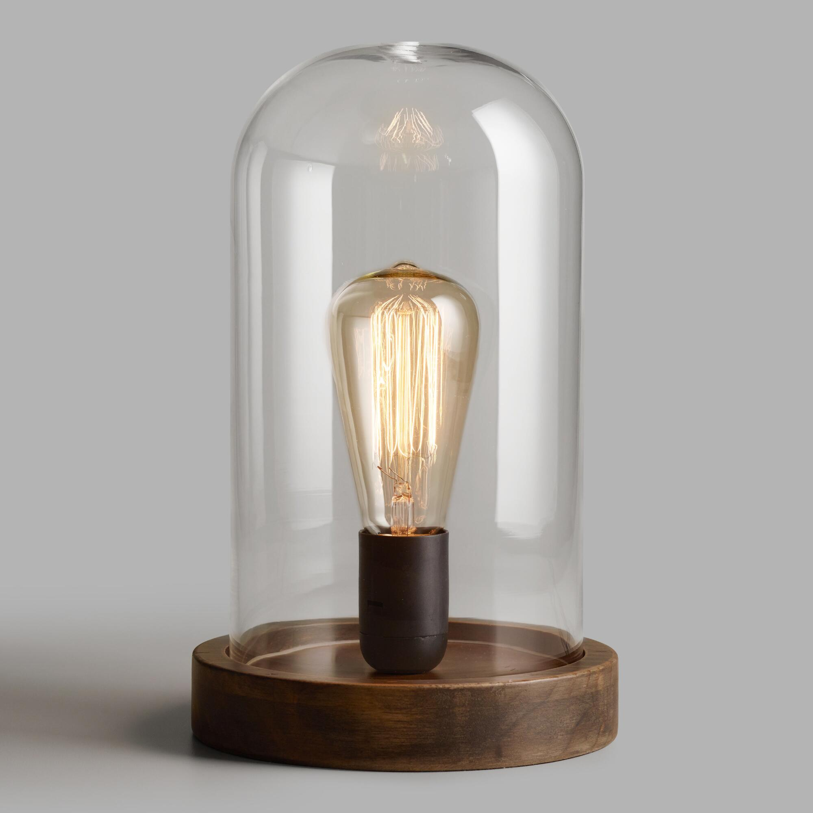
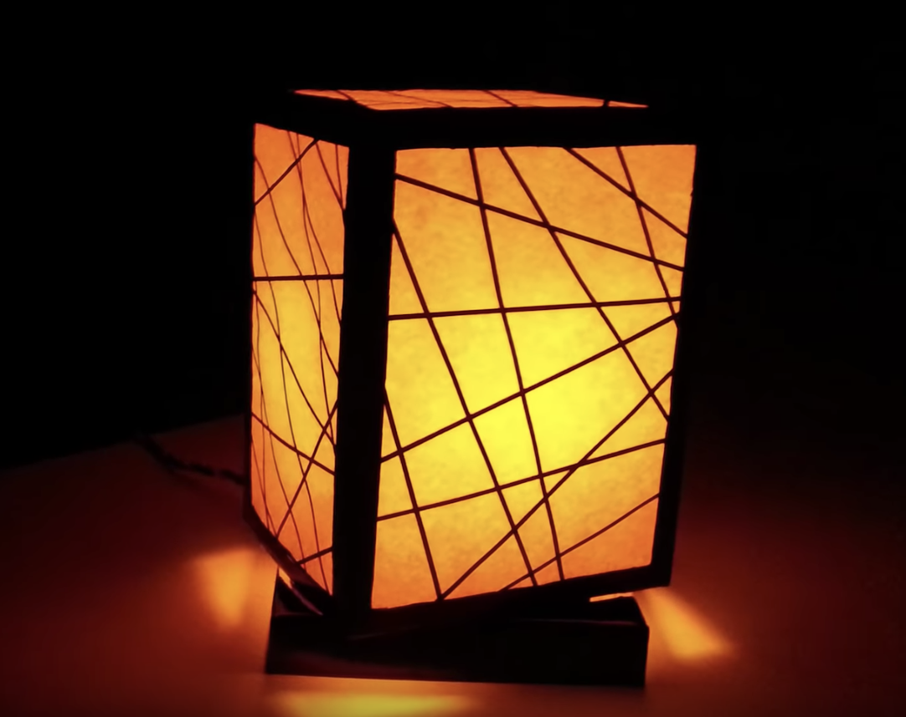
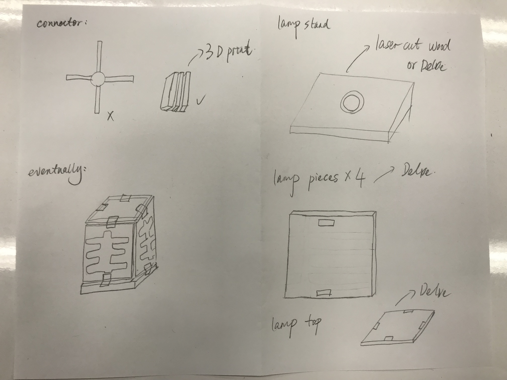

Concept
For the final project, I wanted to build something that I could use in the future. I have been thinking getting a new night stand lamp for a long time, as my current one is too bright and hurt my eyes (see image 1). I wanted to create a lamp with more coverage and bring more diffuse lighting. I have been seeking inspiration from online communities.


I broke down the different parts of the lamp in this graphic.

Breakdown of Tasks
Source files: Lamp similar to the one I own. Lamp I got inspiration from.